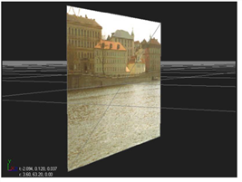
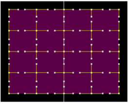
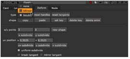
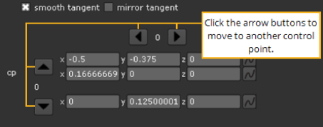

A card is the simplest type of object you can add to a scene (and probably the type you will use most often). It’s merely a plane onto which you can map a texture - typically a clip you are using as part of a pan-and-tile setup.
|
 |
| A card object. |
A card object may be deformed as a bilinear or bicubic object with controls contained in the card’s parameters. You can also insert other 3D nodes, such as ProceduralNoise or RadialDistort, to change the card geometry.
Card nodes have extended bicubics (bicubics with more control points). They allow you to subdivide a card, giving you finer control for warping an area. You can subdivide the card into an evenly spaced grid or pick a location to add a row, column, or both.
| 1. | Click 3D > Geometry > Card to insert a Card node. |
| 2. | Drag the Card node’s img pipe to the Read node that has the image you want to apply to the card. |
| 3. | Connect the Card node to the appropriate Scene node to add it to the 3D scene. |
| 4. | Use the card object’s transform controls to manipulate the position, scale, and rotation of the card in 3D space. For more information, see Transforming from the Node Properties Panel. |
The Deform tab on the Card panel lets you convert the card into a mesh surface that may be pulled and reshaped.
A bicubic deformation offers the greatest degree of surface elasticity. You can add any number of control points on the card and translate these points and their tangents in any direction. The control point tangents exert a magnetic-like influence over the objects surface.
|
 |
| The Card node can have any number of control points you can translate. |
To deform a Card object:
| 1. | Double-click the Card node to open its controls. |
| 2. | Go to the Deform tab, and select the mesh type for the deformation: bilinear or bicubic. |

| 3. | By default, the card has three control points on the x axis, and three on the y axis. To add more control points, do any of the following: |
• Enter new values in the x/y points fields and click the new shape button. For example, to create a shape with 4 points on the x axis and 6 on the y axis, change the x points value to 4 and the y points value to 6, and click new shape.
• To evenly subdivide the current shape in the x or y directions, click the x subdivide or y subdivide buttons. This adds one control point between every existing control point in the selected direction. The x/y points fields are also updated to reflect the current number of control points.
• To add one row or column of control points, adjust the u or v slider. The u slider specifies the position of new columns, and the v slider the position of rows. In the Viewer, a yellow cross marker indicates the position of the new row or column. You can also move the cross marker by dragging it to a new position in the Viewer. The u and v sliders’ values are updated as you move the marker. When you are happy with the position, click the uv subdivide button. A row or column is added in the position you specified. Clicking the button again has no effect, because there is already a subdivision at the specified position.
| 4. | If you selected bicubic under type, you can adjust the way control point tangents behave when you are making your changes to the card. Do any of the following: |
• To have the original tangents adjusted to create a more uniform subdivision when you are using x subdivide, y subdivide, or uv subdivide, check uniform subdivision. If you do not check this, Nuke maintains the original tangents.
• You can move the tangents in the Viewer by clicking and dragging. If you want to move a tangent together with the opposite tangent so that the two tangents form a continuous line, check smooth tangent. To break the tangent from the opposite tangent and move the tangent alone, uncheck smooth tangent.
• To change the length of the opposite tangent to always match the length of the tangent you are moving, check mirror tangent. If you do not check this, the opposite tangent length is not changed.
| 5. | Drag the points displayed in the mesh to deform the card. |
To translate the control points and tangents:
| 1. | If necessary, double-click on the Card node to display its controls, and go to the Deform tab. |
| 2. | Only the controls for the selected point are displayed in the bottom of the Card properties panel. To translate another point, you can select a new point in the Viewer or use the arrow buttons in the bottom of the Card controls to move to the next control point. |

| 3. | To translate the control points and their tangents: |
• Increment or decrement the numbered x, y, and z fields. For each control point, the controls for translating the point itself are shown on top of the controls for translating the tangents.
• Or drag on any control point or tangent to translate it relative to the current angle of view.
|
|